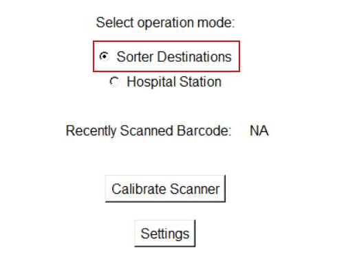

| Procedure ID | proc_inspect_hospital_station_daily_preventive_maintenance_v1 |
|---|---|
| Title | Inspect Hospital Station Daily Preventive Maintenance (Barcode Scanner, Stacklight, Tabletop Debris) |
| Procedure Type | operation |
| Primary Role | operator |
| Support Safe | Yes |
| Capability Tags | device_roster_state |
| Access Surface | hospital_hmi, physical_floor |
| Audience Roles | operator |
| Failure Pattern Tags | None |
| Validation Status | needs_sme_review |
| Merge Status | source_finalized |
Perform a daily preventive maintenance inspection on each hospital station by verifying the barcode scanner is operational, the stacklight is operational, and the tabletop is free of debris (e.g., stuck labels).
Use this procedure for daily preventive maintenance on each hospital station to confirm the station’s barcode scanner and stacklight are operational and that the tabletop is clear of debris.


Responsible role: operator
Instruction:
For each hospital station, visually inspect the barcode scanner to confirm it is operational (e.g., not visibly damaged/obstructed).
Expected result:
The barcode scanner at the station is operational (no visible damage/obstruction preventing normal use).
Stop or Escalate If:
Responsible role: operator
Instruction:
For each hospital station, visually inspect the stacklight to confirm it is operational (e.g., not visibly damaged/obstructed).
Expected result:
The stacklight at the station is operational (no visible damage/obstruction preventing normal use).
Stop or Escalate If:
Responsible role: operator
Instruction:
For each hospital station, inspect the tabletop and remove/clear any debris such as stuck labels.
Expected result:
The tabletop is free of debris (no stuck labels) at the station.
Stop or Escalate If:
Responsible role: operator
Instruction:
If a hospital station barcode scanner or stacklight is not operational, or if debris cannot be cleared, stop the inspection for that station and escalate to the appropriate maintenance contact.
Expected result:
Inspection is stopped for the affected station and maintenance escalation is initiated.
Stop or Escalate If: